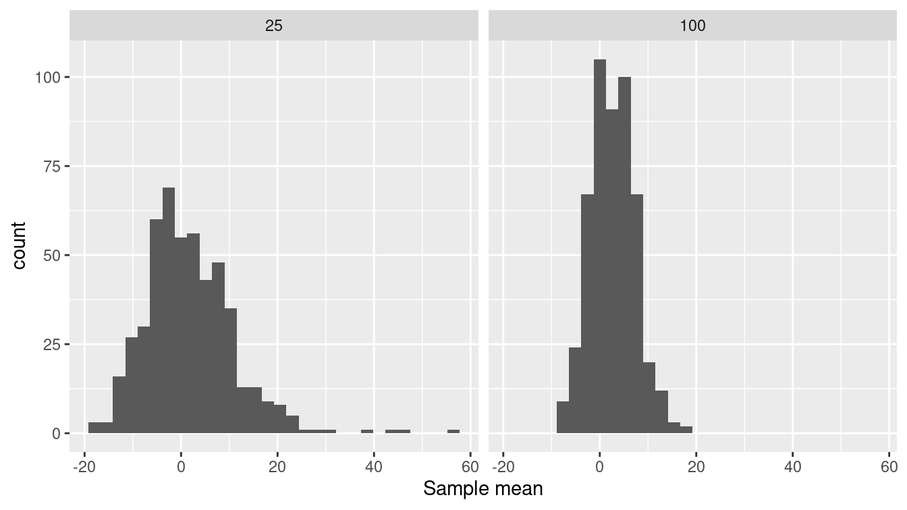
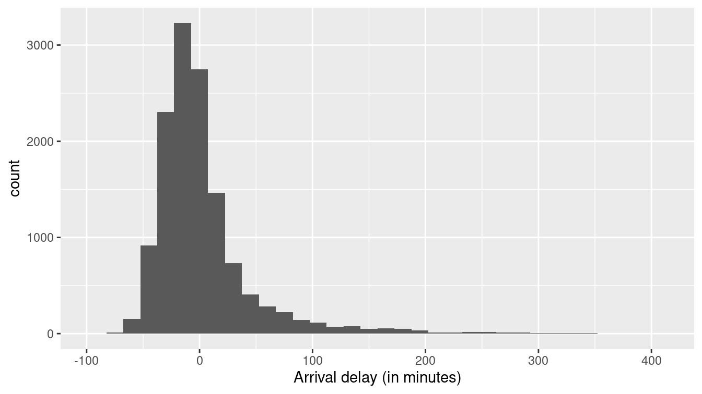
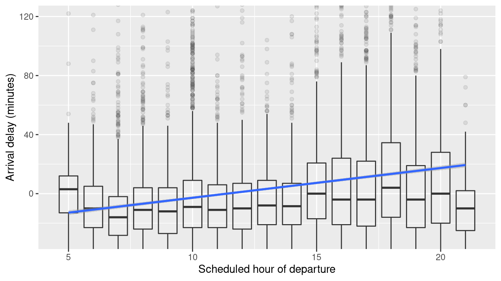
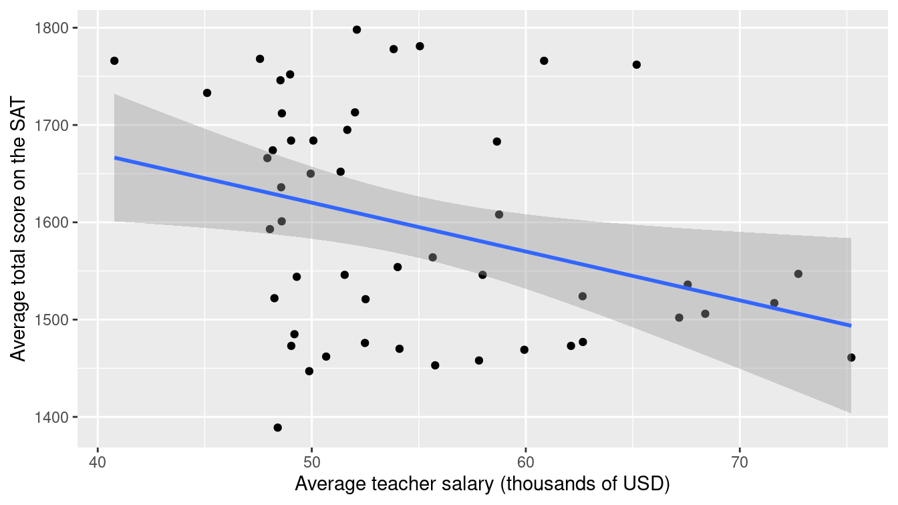
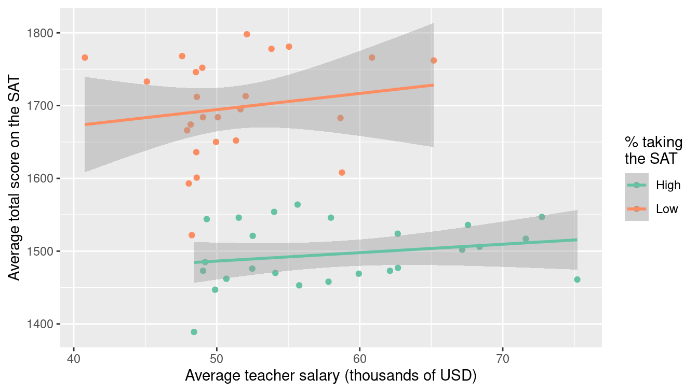

Chapter 9 Statistical foundations
The ultimate objective in data science is to extract meaning from data. Data wrangling and visualization are tools to this end. Wrangling re-organizes cases and variables to make data easier to interpret. Visualization is a primary tool for connecting our minds with the data, so that we humans can search for meaning.
Visualizations are powerful because human visual cognitive skills are strong. We are very good at seeing patterns even when partially obscured by random noise. On the other hand, we are also very good at seeing patterns even when they are not there. People can easily be misled by the accidental, evanescent patterns that appear in random noise. It’s important, therefore, to be able to discern when the patterns we see are so strong and robust that we can be confident they are not mere accidents.
Statistical methods quantify patterns and their strength. They are essential tools for interpreting data. As we’ll see later in this book, the methods are also crucial for finding patterns that are too complex or multi-faceted to be seen visually.
Some people think that big data has made statistics obsolete. The argument is that with lots of data, the data can speak clearly for themselves. This is wrong, as we shall see. The discipline for making efficient use of data that is a core of statistical methodology leads to deeper thinking about how to make use of data—that thinking applies to large data sets as well.
In this chapter, we will introduce key ideas from statistics that permeate data science and that will be reinforced later in the book. At the same time, the extended example used in this chapter will illustrate a data science workflow that uses a cycle of wrangling, exploring, visualizing, and modeling.
9.1 Samples and populations
In previous chapters, we’ve considered data as being fixed. Indeed, the word “data” stems from the Latin word for “given”—any set of data is treated as given.
Statistical methodology is governed by a broader point of view. Yes, the data we have in hand are fixed, but the methodology assumes that the cases are drawn from a much larger set of potential cases. The given data are a sample of a larger population of potential cases. In statistical methodology, we view our sample of cases in the context of this population. We imagine other samples that might have been drawn from the population.
At the same time, we imagine that there might have been additional variables that could have been measured from the population. We permit ourselves to construct new variables that have a special feature: any patterns that appear involving the new variables are guaranteed to be random and accidental. The tools we will use to gain access to the imagined cases from the population and the contrived no-pattern variables involve the mathematics of probability or (more simply) random selection from a set.
In the next section, we’ll elucidate some of the connections between the sample—the data we’ve got—and the population. To do this, we’ll use an artifice: constructing a playground that contains the entire population. Then, we can work with data consisting of a smaller set of cases selected at random from this population. This lets us demonstrate and justify the statistical methods in a setting where we know the “correct” answer. That way, we can develop ideas about how much confidence statistical methods can give us about the patterns we see.
9.1.1 Example: Setting travel policy by sampling from the population
Suppose you were asked to help develop a travel policy for business travelers based in New York City. Imagine that the traveler has a meeting in San Francisco (airport code SFO) at a specified time \(t\). The policy to be formulated will say how much earlier than \(t\) an acceptable flight should arrive in order to avoid being late to the meeting due to a flight delay.
For the purpose of this example, recall from the previous section that we are going to pretend that we already have on hand the complete population of flights. For this purpose, we’re going to use the subset of 336,776 flights in 2013 in the nycflights13 package, which gives airline delays from New York City airports in 2013. The policy we develop will be for 2013. Of course this is unrealistic in practice. If we had the complete population we could simply look up the best flight that arrived in time for the meeting!
More realistically, the problem would be to develop a policy for this year based on the sample of data that have already been collected.
We’re going to simulate this situation by drawing a sample from the population of flights into SFO.
Playing the role of the population in our little drama, SF comprises the complete collection of such flights.
library(tidyverse)
library(mdsr)
library(nycflights13)
SF <- flights %>%
filter(dest == "SFO", !is.na(arr_delay))We’re going to work with just a sample from this population. For now, we’ll set the sample size to be \(n = 25\) cases.
set.seed(101)
sf_25 <- SF %>%
slice_sample(n = 25)A simple (but näive) way to set the policy is to look for the longest flight delay and insist that travel be arranged to deal with this delay.
sf_25 %>%
skim(arr_delay)
── Variable type: numeric ──────────────────────────────────────────────────
var n na mean sd p0 p25 p50 p75 p100
1 arr_delay 25 0 0.12 29.8 -38 -23 -5 14 103The maximum delay is 103 minutes, about 2 hours. So, should our travel policy be that the traveler should plan on arriving in SFO about 2 hours ahead? In our example world, we can look at the complete set of flights to see what was the actual worst delay in 2013.
SF %>%
skim(arr_delay)
── Variable type: numeric ──────────────────────────────────────────────────
var n na mean sd p0 p25 p50 p75 p100
1 arr_delay 13173 0 2.67 47.7 -86 -23 -8 12 1007Notice that the results from the sample are different from the results for the population. In the population, the longest delay was 1,007 minutes—almost 17 hours. This suggests that to avoid missing a meeting, you should travel the day before the meeting. Safe enough, but then:
- an extra travel day is expensive in terms of lodging, meals, and the traveler’s time;
- even at that, there’s no guarantee that there will never be a delay of more than 1,007 minutes.
A sensible travel policy will trade off small probabilities of being late against the savings in cost and traveler’s time. For instance, you might judge it acceptable to be late just 2% of the time—a 98% chance of being on time.
Here’s the \(98^{th}\) percentile of the arrival delays in our data sample:
sf_25 %>%
summarize(q98 = quantile(arr_delay, p = 0.98))# A tibble: 1 × 1
q98
<dbl>
1 67.5A delay of 68 minutes is more than an hour. The calculation is easy, but how good is the answer? This is not a question about whether the \(98^{th}\) percentile was calculated properly—that will always be the case for any competent data scientist. The question is really along these lines: Suppose we used a 90-minute travel policy. How well would that have worked in achieving our intention to be late for meetings only 2% of the time?
With the population data in hand, it’s easy to answer this question.
SF %>%
group_by(arr_delay < 90) %>%
count() %>%
mutate(pct = n / nrow(SF))# A tibble: 2 × 3
# Groups: arr_delay < 90 [2]
`arr_delay < 90` n pct
<lgl> <int> <dbl>
1 FALSE 640 0.0486
2 TRUE 12533 0.951 The 90-minute policy would miss its mark 5% of the time, much worse than we intended. To correctly hit the mark 2% of the time, we will want to increase the policy from 90 minutes to what value?
With the population, it’s easy to calculate the \(98^{th}\) percentile of the arrival delays:
SF %>%
summarize(q98 = quantile(arr_delay, p = 0.98))# A tibble: 1 × 1
q98
<dbl>
1 153It should have been about 150 minutes.
But in most real-world settings, we do not have access to the population data. We have only our sample. How can we use our sample to judge whether the result we get from the sample is going to be good enough to meet the 98% goal? And if it’s not good enough, how large should a sample be to give a result that is likely to be good enough? This is where the concepts and methods from statistics come in.
We will continue exploring this example throughout the chapter. In addition to addressing our initial question, we’ll examine the extent to which the policy should depend on the airline carrier, the time of year, hour of day, and day of the week.
The basic concepts we’ll build on are sample statistics such as the mean and standard deviation. These topics are covered in introductory statistics books. Readers who have not yet encountered these topics should review an introductory statistics text such as the OpenIntro Statistics books (http://openintro.org), Appendix E, or the materials in Section 9.8 (Further resources).
9.2 Sample statistics
Statistics (plural) is a field that overlaps with and contributes to data science. A statistic (singular) is a number that summarizes data. Ideally, a statistic captures all of the useful information from the individual observations.
When we calculate the \(98^{th}\) percentile of a sample, we are calculating one of many possible sample statistics. Among the many sample statistics are the mean of a variable, the standard deviation, the median, the maximum, and the minimum. It turns out that sample statistics such as the maximum and minimum are not very useful. The reason is that there is not a reliable (or robust) way to figure out how well the sample statistic reflects what is going on in the population. Similarly, the \(98^{th}\) percentile is not a reliable sample statistic for small samples (such as our 25 flights into SFO), in the sense that it will vary considerably in small samples.
On the other hand, a median is a more reliable sample statistic. Under certain conditions, the mean and standard deviation are reliable as well. In other words, there are established techniques for figuring out—from the sample itself—how well the sample statistic reflects the population.
9.2.1 The sampling distribution
Ultimately we need to figure out the reliability of a sample statistic from the sample itself. For now, though, we are going to use the population to develop some ideas about how to define reliability. So we will still be in the playground world where we have the population in hand.
If we were to collect a new sample from the population, how similar would the sample statistic on that new sample be to the same statistic calculated on the original sample? Or, stated somewhat differently, if we draw many different samples from the population, each of size \(n\), and calculated the sample statistic on each of those samples, how similar would the sample statistic be across all the samples?
With the population in hand, it’s easy to figure this out; use slice_sample() many times and calculate the sample statistic on each trial.
For instance, here are two trials in which we sample and calculate the mean arrival delay.
(We’ll explain the replace = FALSE in the next section.
Briefly, it means to draw the sample as one would deal from a set of cards: None of the cards can appear twice in one hand.)
n <- 25
SF %>%
slice_sample(n = n) %>%
summarize(mean_arr_delay = mean(arr_delay))# A tibble: 1 × 1
mean_arr_delay
<dbl>
1 8.32SF %>%
slice_sample(n = n) %>%
summarize(mean_arr_delay = mean(arr_delay))# A tibble: 1 × 1
mean_arr_delay
<dbl>
1 19.8Perhaps it would be better to run many trials (though each one would require considerable effort in the real world).
The map() function from the purrr package (see Chapter 7) lets us automate the process.
Here are the results from 500 trials.
num_trials <- 500
sf_25_means <- 1:num_trials %>%
map_dfr(
~ SF %>%
slice_sample(n = n) %>%
summarize(mean_arr_delay = mean(arr_delay))
) %>%
mutate(n = n)
head(sf_25_means)# A tibble: 6 × 2
mean_arr_delay n
<dbl> <dbl>
1 -3.64 25
2 1.08 25
3 16.2 25
4 -2.64 25
5 0.4 25
6 8.04 25We now have 500 trials, for each of which we calculated the mean arrival delay. Let’s examine how spread out the results are.
sf_25_means %>%
skim(mean_arr_delay)
── Variable type: numeric ──────────────────────────────────────────────────
var n na mean sd p0 p25 p50 p75 p100
1 mean_arr_delay 500 0 1.78 9.22 -17.2 -4.37 0.76 7.36 57.3To discuss reliability, it helps to have some standardized vocabulary.
The sample size is the number of cases in the sample, usually denoted with \(n\). In the above, the sample size is \(n = 25\).
The sampling distribution is the collection of the sample statistic from all of the trials. We carried out 500 trials here, but the exact number of trials is not important so long as it is large.
The shape of the sampling distribution is worth noting. Here it is a little skewed to the right. We can tell because in this case the mean is more than twice the median.
The standard error is the standard deviation of the sampling distribution. It describes the width of the sampling distribution. For the trials calculating the sample mean in samples with \(n = 25\), the standard error is 9.22 minutes. (You can see this value in the output of
skim()above, as the standard deviation of the sample means that we generated.)The 95% confidence interval is another way of summarizing the sampling distribution. From Figure 9.1 (left panel) you can see it is about \(-16\) to +20 minutes. The interval can be used to identify plausible values for the true mean arrival delay. It is calculated from the mean and standard error of the sampling distribution.
sf_25_means %>%
summarize(
x_bar = mean(mean_arr_delay),
se = sd(mean_arr_delay)
) %>%
mutate(
ci_lower = x_bar - 2 * se, # approximately 95% of observations
ci_upper = x_bar + 2 * se # are within two standard errors
)# A tibble: 1 × 4
x_bar se ci_lower ci_upper
<dbl> <dbl> <dbl> <dbl>
1 1.78 9.22 -16.7 20.2Alternatively, it can be calculated directly using a t-test.
sf_25_means %>%
pull(mean_arr_delay) %>%
t.test()
One Sample t-test
data: .
t = 4, df = 499, p-value = 2e-05
alternative hypothesis: true mean is not equal to 0
95 percent confidence interval:
0.969 2.590
sample estimates:
mean of x
1.78 This vocabulary can be very confusing at first. Remember that “standard error” and “confidence interval” always refer to the sampling distribution, not to the population and not to a single sample. The standard error and confidence intervals are two different, but closely related, forms for describing the reliability of the calculated sample statistic.
An important question that statistical methods allow you to address is what size of sample \(n\) is needed to get a result with an acceptable reliability. What constitutes “acceptable” depends on the goal you are trying to accomplish. But measuring the reliability is a straightforward matter of finding the standard error and/or confidence interval.
Notice that the sample statistic varies considerably. For samples of size \(n=25\) they range from \(-17\) to 57 minutes. This is important information. It illustrates the reliability of the sample mean for samples of arrival delays of size \(n = 25\). Figure 9.1 (left) shows the distribution of the trials with a histogram.
In this example, we used a sample size of \(n = 25\) and found a standard error of 9.2 minutes. What would happen if we used an even larger sample, say \(n = 100\)? The calculation is the same as before but with a different \(n\).
n <- 100
sf_100_means <- 1:500 %>%
map_dfr(
~ SF %>%
slice_sample(n = n) %>%
summarize(mean_arr_delay = mean(arr_delay))
) %>%
mutate(n = n)
sf_25_means %>%
bind_rows(sf_100_means) %>%
ggplot(aes(x = mean_arr_delay)) +
geom_histogram(bins = 30) +
facet_grid( ~ n) +
xlab("Sample mean")
Figure 9.1: The sampling distribution of the mean arrival delay with a sample size of \(n=25\) (left) and also for a larger sample size of \(n = 100\) (right). Note that the sampling distribution is less variable for a larger sample size.
Figure 9.1 (right panel) displays the shape of the sampling distribution for samples of size \(n=25\) and \(n = 100\). Comparing the two sampling distributions, one with \(n = 25\) and the other with \(n = 100\) shows some patterns that are generally true for statistics such as the mean:
- Both sampling distributions are centered at the same value.
- A larger sample size produces a standard error that is smaller. That is, a larger sample size is more reliable than a smaller sample size. You can see that the standard deviation for \(n = 100\) is one-half that for \(n = 25\). As a rule, the standard error of a sampling distribution scales as \(1 / \sqrt{n}\).
- For large sample sizes, the shape of the sampling distribution tends to bell-shaped. In a bit of archaic terminology, this shape is often called the normal distribution. Indeed, the distribution arises very frequently in statistics, but there is nothing abnormal about any other distribution shape.
9.3 The bootstrap
In the previous examples, we had access to the population data and so we could find the sampling distribution by repeatedly sampling from the population. In practice, however, we have only one sample and not the entire population. The bootstrap is a statistical method that allows us to approximate the sampling distribution even without access to the population.
The logical leap involved in the bootstrap is to think of our sample itself as if it were the population. Just as in the previous examples we drew many samples from the population, now we will draw many new samples from our original sample. This process is called resampling: drawing a new sample from an existing sample.
When sampling from a population, we would of course make sure not to duplicate any of the cases, just as we would never deal the same playing card twice in one hand. When resampling, however, we do allow such duplication (in fact, this is what allows us to estimate the variability of the sample). Therefore, we sample with replacement.
To illustrate, consider three_flights, a very small sample (\(n = 3\)) from the flights data.
Notice that each of the cases in three_flights is unique.
There are no duplicates.
three_flights <- SF %>%
slice_sample(n = 3, replace = FALSE) %>%
select(year, month, day, dep_time)
three_flights# A tibble: 3 × 4
year month day dep_time
<int> <int> <int> <int>
1 2013 11 4 726
2 2013 3 12 734
3 2013 3 25 1702Resampling from three_flights is done by setting the replace argument to TRUE, which allows the sample to include duplicates.
three_flights %>% slice_sample(n = 3, replace = TRUE)# A tibble: 3 × 4
year month day dep_time
<int> <int> <int> <int>
1 2013 3 25 1702
2 2013 11 4 726
3 2013 3 12 734In this particular resample, each of the individual cases appear once (but in a different order). That’s a matter of luck. Let’s try again.
three_flights %>% slice_sample(n = 3, replace = TRUE)# A tibble: 3 × 4
year month day dep_time
<int> <int> <int> <int>
1 2013 3 12 734
2 2013 3 12 734
3 2013 3 25 1702This resample has two instances of one case and a single instance of another.
Bootstrapping does not create new cases: It isn’t a way to collect data.
In reality, constructing a sample involves genuine data acquisition, e.g., field work or lab work or using information technology systems to consolidate data.
In this textbook example, we get to save all that effort and simply select at random from the population, SF.
The one and only time we use the population is to draw the original sample, which, as always with a sample, we do without replacement.
Let’s use bootstrapping to estimate the reliability of the mean arrival time calculated on a sample of size 200. (Ordinarily this is all we get to observe about the population.)
n <- 200
orig_sample <- SF %>%
slice_sample(n = n, replace = FALSE)Now, with this sample in hand, we can draw a resample (of that sample size) and calculate the mean arrival delay.
orig_sample %>%
slice_sample(n = n, replace = TRUE) %>%
summarize(mean_arr_delay = mean(arr_delay))# A tibble: 1 × 1
mean_arr_delay
<dbl>
1 6.80By repeating this process many times, we’ll be able to see how much variation there is from sample to sample:
sf_200_bs <- 1:num_trials %>%
map_dfr(
~orig_sample %>%
slice_sample(n = n, replace = TRUE) %>%
summarize(mean_arr_delay = mean(arr_delay))
) %>%
mutate(n = n)
sf_200_bs %>%
skim(mean_arr_delay)
── Variable type: numeric ──────────────────────────────────────────────────
var n na mean sd p0 p25 p50 p75 p100
1 mean_arr_delay 500 0 3.05 3.09 -5.03 1.01 3 5.14 13.1We could estimate the standard deviation of the arrival delays to be about 3.1 minutes.
Ordinarily, we wouldn’t be able to check this result.
But because we have access to the population data in this example, we can.
Let’s compare our bootstrap estimate to a set of (hypothetical) samples of size \(n=200\) from the original SF flights (the population).
sf_200_pop <- 1:num_trials %>%
map_dfr(
~SF %>%
slice_sample(n = n, replace = TRUE) %>%
summarize(mean_arr_delay = mean(arr_delay))
) %>%
mutate(n = n)
sf_200_pop %>%
skim(mean_arr_delay)
── Variable type: numeric ──────────────────────────────────────────────────
var n na mean sd p0 p25 p50 p75 p100
1 mean_arr_delay 500 0 2.59 3.34 -5.90 0.235 2.51 4.80 14.2
Notice that the population was not used in the bootstrap (sf_200_bs), just the original sample.
What’s remarkable here is that the standard error calculated using the bootstrap (3.1 minutes) is a reasonable approximation to the standard error of the sampling distribution calculated by taking repeated samples from the population (3.3 minutes).
The distribution of values in the bootstrap trials is called the bootstrap distribution. It’s not exactly the same as the sampling distribution, but for moderate to large sample sizes and sufficient number of bootstraps it has been proven to approximate those aspects of the sampling distribution that we care most about, such as the standard error and quantiles (B. Efron and Tibshirani 1993).
9.3.1 Example: Setting travel policy
Let’s return to our original example of setting a travel policy for selecting flights from New York to San Francisco. Recall that we decided to set a goal of arriving in time for the meeting 98% of the time. We can calculate the \(98^{th}\) percentile from our sample of size \(n = 200\) flights, and use bootstrapping to see how reliable that sample statistic is.
The sample itself suggests a policy of scheduling a flight to arrive 141 minutes early.
orig_sample %>%
summarize(q98 = quantile(arr_delay, p = 0.98))# A tibble: 1 × 1
q98
<dbl>
1 141.We can check the reliability of that estimate using bootstrapping.
n <- nrow(orig_sample)
sf_200_bs <- 1:num_trials %>%
map_dfr(
~orig_sample %>%
slice_sample(n = n, replace = TRUE) %>%
summarize(q98 = quantile(arr_delay, p = 0.98))
)
sf_200_bs %>%
skim(q98)
── Variable type: numeric ──────────────────────────────────────────────────
var n na mean sd p0 p25 p50 p75 p100
1 q98 500 0 140. 29.2 53.0 123. 141 154. 196.The bootstrapped standard error is about 29 minutes. The corresponding 95% confidence interval is 140 \(\pm\) 58 minutes. A policy based on this would be practically a shot in the dark: unlikely to hit the target.
One way to fix things might be to collect more data, hoping to get a more reliable estimate of the \(98^{th}\) percentile. Imagine that we could do the work to generate a sample with \(n = 10,000\) cases.
set.seed(1001)
n_large <- 10000
sf_10000_bs <- SF %>%
slice_sample(n = n_large, replace = FALSE)
sf_200_bs <- 1:num_trials %>%
map_dfr(~sf_10000_bs %>%
slice_sample(n = n_large, replace = TRUE) %>%
summarize(q98 = quantile(arr_delay, p = 0.98))
)
sf_200_bs %>%
skim(q98)
── Variable type: numeric ──────────────────────────────────────────────────
var n na mean sd p0 p25 p50 p75 p100
1 q98 500 0 154. 4.14 139. 151. 153. 156. 169The standard deviation is much narrower, 154 \(\pm\) 8 minutes. Having more data makes it easier to better refine estimates, particularly in the tails.
9.4 Outliers
One place where more data is helpful is in identifying unusual or extreme events: outliers. Suppose we consider any flight delayed by 7 hours (420 minutes) or more as an extreme event (see Section 15.5). While an arbitrary choice, 420 minutes may be valuable as a marker for seriously delayed flights.
SF %>%
filter(arr_delay >= 420) %>%
select(month, day, dep_delay, arr_delay, carrier)# A tibble: 7 × 5
month day dep_delay arr_delay carrier
<int> <int> <dbl> <dbl> <chr>
1 12 7 374 422 UA
2 7 6 589 561 DL
3 7 7 629 676 VX
4 7 7 653 632 VX
5 7 10 453 445 B6
6 7 10 432 433 VX
7 9 20 1014 1007 AA
Most of the very long delays (five of seven) were in July, and Virgin America (VX) is the most frequent offender.
Immediately, this suggests one possible route for improving the outcome of the business travel policy we have been asked to develop.
We could tell people to arrive extra early in July and to avoid VX.
But let’s not rush into this. The outliers themselves may be misleading. These outliers account for a tiny fraction of the flights into San Francisco from New York in 2013. That’s a small component of our goal of having a failure rate of 2% in getting to meetings on time. And there was an even more extremely rare event at SFO in July 2013: the crash-landing of Asiana Airlines flight 214. We might remove these points to get a better sense of the main part of the distribution.
Outliers can often tell us interesting things. How they should be handled depends on their cause. Outliers due to data irregularities or errors should be fixed. Other outliers may yield important insights. Outliers should never be dropped unless there is a clear rationale. If outliers are dropped this should be clearly reported.
Figure 9.2 displays the histogram without those outliers.
SF %>%
filter(arr_delay < 420) %>%
ggplot(aes(arr_delay)) +
geom_histogram(binwidth = 15) +
labs(x = "Arrival delay (in minutes)")
Figure 9.2: Distribution of flight arrival delays in 2013 for flights to San Francisco from NYC airports that were delayed less than 7 hours. The distribution features a long right tail (even after pruning the outliers).
Note that the large majority of flights arrive without any delay or a delay of less than 60 minutes.
Might we be able to identify patterns that can presage when the longer delays are likely to occur?
The outliers suggested that month or carrier may be linked to long delays.
Let’s see how that plays out with the large majority of data.
SF %>%
mutate(long_delay = arr_delay > 60) %>%
group_by(month, long_delay) %>%
count() %>%
pivot_wider(names_from = month, values_from = n) %>%
data.frame() long_delay X1 X2 X3 X4 X5 X6 X7 X8 X9 X10 X11 X12
1 FALSE 856 741 812 993 1128 980 966 1159 1124 1177 1107 1093
2 TRUE 29 21 61 112 65 209 226 96 65 36 51 66We see that June and July (months 6 and 7) are problem months.
SF %>%
mutate(long_delay = arr_delay > 60) %>%
group_by(carrier, long_delay) %>%
count() %>%
pivot_wider(names_from = carrier, values_from = n) %>%
data.frame() long_delay AA B6 DL UA VX
1 FALSE 1250 934 1757 6236 1959
2 TRUE 148 86 91 492 220
Delta Airlines (DL) has reasonable performance.
These two simple analyses hint at a policy that might advise travelers to plan to arrive extra early in June and July and to consider Delta as an airline for travel to SFO (see Section 15.5 for a fuller discussion of which airlines seem to have fewer delays in general).
9.5 Statistical models: Explaining variation
In the previous section, we used month of the year and airline to narrow down the situations in which the risk of an unacceptable flight delay is large. Another way to think about this is that we are explaining part of the variation in arrival delay from flight to flight. Statistical modeling provides a way to relate variables to one another. Doing so helps us better understand the system we are studying.
To illustrate modeling, let’s consider another question from the airline delays data set: What impact, if any, does scheduled time of departure have on expected flight delay? Many people think that earlier flights are less likely to be delayed, since flight delays tend to cascade over the course of the day. Is this theory supported by the data?
We first begin by considering time of day.
In the nycflights13 package, the flights data frame has a variable (hour) that specifies the scheduled hour of departure.
SF %>%
group_by(hour) %>%
count() %>%
pivot_wider(names_from = hour, values_from = n) %>%
data.frame() X5 X6 X7 X8 X9 X10 X11 X12 X13 X14 X15 X16 X17 X18 X19 X20 X21
1 55 663 1696 987 429 1744 413 504 476 528 946 897 1491 1091 731 465 57We see that many flights are scheduled in the early to mid-morning and from the late afternoon to early evening. None are scheduled before 5 am or after 10 pm.
Let’s examine how the arrival delay depends on the hour. We’ll do this in two ways: first using standard box-and-whisker plots to show the distribution of arrival delays; second with a kind of statistical model called a linear model that lets us track the mean arrival delay over the course of the day.
SF %>%
ggplot(aes(x = hour, y = arr_delay)) +
geom_boxplot(alpha = 0.1, aes(group = hour)) +
geom_smooth(method = "lm") +
xlab("Scheduled hour of departure") +
ylab("Arrival delay (minutes)") +
coord_cartesian(ylim = c(-30, 120)) 
Figure 9.3: Association of flight arrival delays with scheduled departure time for flights to San Francisco from New York airports in 2013.
Figure 9.3 displays the arrival delay versus schedule departure hour. The average arrival delay increases over the course of the day. The trend line itself is created via a regression model (see Appendix E).
mod1 <- lm(arr_delay ~ hour, data = SF)
broom::tidy(mod1)# A tibble: 2 × 5
term estimate std.error statistic p.value
<chr> <dbl> <dbl> <dbl> <dbl>
1 (Intercept) -22.9 1.23 -18.6 2.88e- 76
2 hour 2.01 0.0915 22.0 1.78e-105
The number under the “estimate” for hour indicates that the arrival delay is predicted to be about 2 minutes higher per hour.
Over the 15 hours of flights, this leads to a 30-minute increase in arrival delay comparing flights at the end of the day to flights at the beginning of the day.
The tidy() function from the broom package also calculates the standard error: 0.09 minutes per hour.
Stated as a 95% confidence interval, this model indicates that we are 95% confident that the true arrival delay increases by \(2.0 \pm 0.18\) minutes per hour.
The rightmost column gives the p-value, a way of translating the estimate and standard error onto a scale from zero to one.
By convention, p-values below 0.05 provide a kind of certificate testifying that random, accidental patterns would be unlikely to generate an estimate as large as that observed.
The tiny p-value given in the report (2e-16 is 0.0000000000000002) is another way of saying that if there was no association between time of day and flight delays, we would be very unlikely to see a result this extreme or more extreme.
Re-read those last three sentences. Confusing? Despite an almost universal practice of presenting p-values, they are mostly misunderstood even by scientists and other professionals. The p-value conveys much less information than usually supposed: The “certificate” might not be worth the paper it’s printed on (see Section 9.7).
Can we do better?
What additional factors might help to explain flight delays?
Let’s look at departure airport, carrier (airline), month of the year, and day of the week.
Some wrangling will let us extract the day of the week (dow) from the year, month, and day of month.
We’ll also create a variable season that summarizes what we already know about the month: that June and July are the months with long delays.
These will be used as explanatory variables to account for the response variable: arrival delay.
library(lubridate)
SF <- SF %>%
mutate(
day = as.Date(time_hour),
dow = as.character(wday(day, label = TRUE)),
season = ifelse(month %in% 6:7, "summer", "other month")
)Now we can build a model that includes variables we want to use to explain arrival delay.
mod2 <- lm(arr_delay ~ hour + origin + carrier + season + dow, data = SF)
broom::tidy(mod2)# A tibble: 14 × 5
term estimate std.error statistic p.value
<chr> <dbl> <dbl> <dbl> <dbl>
1 (Intercept) -24.6 2.17 -11.3 1.27e- 29
2 hour 2.08 0.0898 23.2 1.44e-116
3 originJFK 4.12 1.00 4.10 4.17e- 5
4 carrierB6 -10.3 1.88 -5.49 4.07e- 8
5 carrierDL -18.4 1.62 -11.4 5.88e- 30
6 carrierUA -4.76 1.48 -3.21 1.31e- 3
7 carrierVX -5.06 1.60 -3.17 1.54e- 3
8 seasonsummer 25.3 1.03 24.5 5.20e-130
9 dowMon 1.74 1.45 1.20 2.28e- 1
10 dowSat -5.60 1.55 -3.62 2.98e- 4
11 dowSun 5.12 1.48 3.46 5.32e- 4
12 dowThu 3.16 1.45 2.18 2.90e- 2
13 dowTue -1.65 1.45 -1.14 2.53e- 1
14 dowWed -0.884 1.45 -0.610 5.42e- 1The numbers in the “estimate” column tell us that we should add 4.1 minutes to the average delay if departing from JFK (instead of EWR, also known as Newark, which is the reference group).
Delta has a better average delay than the other carriers.
Delays are on average longer in June and July (by 25 minutes), and on Sundays (by 5 minutes).
Recall that the Aviana crash was in July.
The model also indicates that Sundays are associated with roughly 5 minutes of additional delays; Saturdays are 6 minutes less delayed on average. (Each of the days of the week is being compared to Friday, chosen as the reference group because it comes first alphabetically.) The standard errors tell us the precision of these estimates; the p-values describe whether the individual patterns are consistent with what might be expected to occur by accident even if there were no systemic association between the variables.
In this example, we’ve used lm() to construct what are called linear models.
Linear models describe how the mean of the response variable varies with the explanatory variables.
They are the most widely used statistical modeling technique, but there are others.
In particular, since our original motivation was to set a policy about business travel, we might want a modeling technique that lets us look at another question: What is the probability that a flight will be, say, greater than 100 minutes late?
Without going into detail, we’ll mention that a technique called logistic regression is appropriate for such dichotomous outcomes (see Chapter 11 and Section E.5 for more examples).
9.6 Confounding and accounting for other factors
We drill the mantra correlation does not imply causation into students whenever statistics are discussed. While the statement is certainly true, it may not be so helpful.
There are many times when correlations do imply causal relationships (beyond just in carefully conducted randomized trials). A major concern for observational data is whether the true associations are being distorted by other factors that may be the actual determinants of the observed relationship between two factors. Such other factors may confound the relationship being studied.
Randomized trials in scientific experiments are considered the gold standard for evidence-based research. Such trials, sometimes called A/B tests, are commonly undertaken to compare the effect of a treatment (e.g., two different forms of a Web page). By controlling who receives a new intervention and who receives a control (or standard treatment), the investigator ensures that, on average, all other factors are balanced between the two groups. This allows them to conclude that if there are differences in the outcomes measured at the end of the trial, they can be attributed to the application of the treatment. (It’s worth noting that randomized trials can also have confounding if subjects don’t comply with treatments or are lost on follow-up.)
While they are ideal, randomized trials are not practical in many settings.
It is not ethical to
randomize some children to smoke and the others not to smoke in order to determine whether cigarettes cause lung cancer.
It is not
practical to randomize adults to either drink coffee or abstain to determine whether it has
long-term health impacts.
Observational (or “found”) data may be the only feasible way to answer important questions.
Let’s consider an example of confounding using observational data on average teacher salaries (in 2010) and average total SAT scores for each of the 50 United States. The SAT (Scholastic Aptitude Test) is a high-stakes exam used for entry into college. Are higher teacher salaries associated with better outcomes on the test at the state level? If so, should we adjust salaries to improve test performance? Figure 9.4 displays a scatterplot of these data. We also fit a linear regression model.
SAT_2010 <- SAT_2010 %>%
mutate(Salary = salary/1000)
SAT_plot <- ggplot(data = SAT_2010, aes(x = Salary, y = total)) +
geom_point() +
geom_smooth(method = "lm") +
ylab("Average total score on the SAT") +
xlab("Average teacher salary (thousands of USD)")
SAT_plot
Figure 9.4: Scatterplot of average SAT scores versus average teacher salaries (in thousands of dollars) for the 50 United States in 2010.
SAT_mod1 <- lm(total ~ Salary, data = SAT_2010)
broom::tidy(SAT_mod1)# A tibble: 2 × 5
term estimate std.error statistic p.value
<chr> <dbl> <dbl> <dbl> <dbl>
1 (Intercept) 1871. 113. 16.5 1.86e-21
2 Salary -5.02 2.05 -2.45 1.79e- 2
Lurking in the background, however, is another important factor.
The percentage of students who take the SAT in each state varies dramatically (from 3% to 93% in 2010).
We can create a variable called SAT_grp that divides the states into two groups.
SAT_2010 %>%
skim(sat_pct)
── Variable type: numeric ──────────────────────────────────────────────────
var n na mean sd p0 p25 p50 p75 p100
1 sat_pct 50 0 38.5 32.0 3 6 27 68 93SAT_2010 <- SAT_2010 %>%
mutate(SAT_grp = ifelse(sat_pct <= 27, "Low", "High"))
SAT_2010 %>%
group_by(SAT_grp) %>%
count()# A tibble: 2 × 2
# Groups: SAT_grp [2]
SAT_grp n
<chr> <int>
1 High 25
2 Low 25Figure 9.5 displays a scatterplot of these data stratified by the grouping of percentage taking the SAT.
SAT_plot %+% SAT_2010 +
aes(color = SAT_grp) +
scale_color_brewer("% taking\nthe SAT", palette = "Set2")
Figure 9.5: Scatterplot of average SAT scores versus average teacher salaries (in thousands of dollars) for the 50 United States in 2010, stratified by the percentage of students taking the SAT in each state.
Using techniques developed in Section 7.5, we can derive the coefficients of the linear model fit to the two separate groups.
SAT_2010 %>%
group_by(SAT_grp) %>%
group_modify(~broom::tidy(lm(total ~ Salary, data = .x)))# A tibble: 4 × 6
# Groups: SAT_grp [2]
SAT_grp term estimate std.error statistic p.value
<chr> <chr> <dbl> <dbl> <dbl> <dbl>
1 High (Intercept) 1428. 62.4 22.9 2.51e-17
2 High Salary 1.16 1.06 1.09 2.85e- 1
3 Low (Intercept) 1583. 141. 11.2 8.52e-11
4 Low Salary 2.22 2.75 0.809 4.27e- 1For each of the groups, average teacher salary is positively associated with average SAT score. But when we collapse over this variable, average teacher salary is negatively associated with average SAT score. This form of confounding is a quantitative version of Simpson’s paradox and arises in many situations. It can be summarized in the following way:
- Among states with a low percentage taking the SAT, teacher salaries and SAT scores are positively associated.
- Among states with a high percentage taking the SAT, teacher salaries and SAT scores are positively associated.
- Among all states, salaries and SAT scores are negatively associated.
Addressing confounding is straightforward if the confounding variables are measured.
Stratification is one approach (as seen above).
Multiple regression is another technique.
Let’s add the sat_pct variable as an additional predictor into the regression model.
SAT_mod2 <- lm(total ~ Salary + sat_pct, data = SAT_2010)
broom::tidy(SAT_mod2)# A tibble: 3 × 5
term estimate std.error statistic p.value
<chr> <dbl> <dbl> <dbl> <dbl>
1 (Intercept) 1589. 58.5 27.2 2.16e-30
2 Salary 2.64 1.15 2.30 2.62e- 2
3 sat_pct -3.55 0.278 -12.8 7.11e-17
We now see that the slope for Salary is positive and statistically significant when
we control for sat_pct.
This is consistent with the results when the model
was stratified by SAT_grp.
We still can’t really conclude that teacher salaries cause improvements in SAT scores. However, the associations that we observe after accounting for the confounding are likely more reliable than those that do not take those factors into account.
Data scientists spend most of their time working with observational data. When seeking to find meaning from such data, it is important to look out for potential confounding factors that could distort observed associations.
9.7 The perils of p-values
We close with a reminder of the perils of null hypothesis statistical testing. Recall that a p-value is defined as the probability of seeing a sample statistic as extreme (or more extreme) than the one that was observed if it were really the case that patterns in the data are a result of random chance. This hypothesis, that only randomness is in play, is called the null hypothesis.
For the earlier models involving the airlines data, the null hypothesis would be that there is no association between the predictors and the flight delay. For the SAT and salary example, the null hypothesis would be that the true (population) regression coefficient (slope) is zero.
Historically, when using hypothesis testing, analysts have declared results with a p-value of 0.05 or smaller as statistically significant, while values larger than 0.05 are declared non-significant. The threshold for that cutoff is called the alpha level of the test. If the null hypothesis is true, hypothesis testers would incorrectly reject the null hypothesis \(100 \cdot \alpha\)% of the time.
There are a number of serious issues with this form of “all or nothing thinking.” Recall that p-values are computed by simulating a world in which a null hypothesis is set to be true (see Chapter 13). The p-value indicates the quality of the concordance between the data and the simulation results. A large p-value indicates the data are concordant with the simulation. A very small p-value means otherwise: that the simulation is irrelevant to describing the mechanism behind the observed patterns. Unfortunately, that in itself tells us little about what kind of hypothesis would be relevant. Ironically, a “significant result” means that we get to reject the null hypothesis but doesn’t tell us what hypothesis to accept!
Always report the actual p-value (or a statement that it is less than some small value such as
p < 0.0001) rather than just the decision (reject null vs. fail to reject the null).
In addition, confidence intervals are often more interpretable and should be reported as well.
Null hypothesis testing and p-values are a vexing topic for many analysts. To help clarify these issues, the American Statistical Association endorsed a statement on p-values (Wasserstein and Lazar 2016) that laid out six useful principles:
- p-values can indicate how incompatible the data are with a specified statistical model.
- p-values do not measure the probability that the studied hypothesis is true, or the probability that the data were produced by random chance alone.
- Scientific conclusions and business or policy decisions should not be based only on whether a p-value passes a specific threshold.
- Proper inference requires full reporting and transparency.
- A p-value, or statistical significance, does not measure the size of an effect or the importance of a result.
- By itself, a p-value does not provide a good measure of evidence regarding a model or hypothesis.
More recent guidance (Wasserstein, Schirm, and Lazar 2019) suggested the ATOM proposal: “Accept uncertainty, be Thoughtful, Open, and Modest.” The problem with p-values is even more vexing in most real-world investigations. Analyses might involve not just a single hypothesis test but instead have dozens or more. In such a situation, even small p-values do not demonstrate discordance between the data and the null hypothesis, so the statistical analysis may tell us nothing at all.
In an attempt to restore meaning to p-values, investigators are starting to clearly delineate and pre-specify the primary and secondary outcomes for a randomized trial. Imagine that such a trial has five outcomes that are defined as being of primary interest. If the usual procedure in which a test is declared statistically significant if its p-value is less than 0.05 is used, the null hypotheses are true, and the tests are independent, we would expect that we would reject one or more of the null hypotheses more than 22% of the time (considerably more than 5% of the time we want).
1 - (1 - 0.05)^5[1] 0.226Clinical trialists have sometimes adapted to this problem by using more stringent statistical determinations. A simple, albeit conservative approach is use of a Bonferroni correction. Consider dividing our \(\alpha\)-level by the number of tests, and only rejecting the null hypothesis when the p-value is less than this adjusted value. In our example, the new threshold would be 0.01 (and the overall experiment-wise error rate is preserved at 0.05).
1 - (1 - 0.01)^5[1] 0.049For observational analyses without pre-specified protocols, it is much harder to determine what (if any) Bonferroni correction is appropriate.
For analyses that involve many hypothesis tests it is appropriate to include a note of possible limitations that some of the results may be spurious due to multiple comparisons.
A related problem has been called the garden of forking paths by Andrew Gelman of Columbia University. Most analyses involve many decisions about how to code data, determine important factors, and formulate and then revise models before the final analyses are set. This process involves looking at the data to construct a parsimonious representation. For example, a continuous predictor might be cut into some arbitrary groupings to assess the relationship between that predictor and the outcome. Or certain variables might be included or excluded from a regression model in an exploratory process.
This process tends to lead towards hypothesis tests that are biased against a null result, since decisions that yield more of a signal (or smaller p-value) might be chosen rather than other options. In clinical trials, the garden of forking paths problem may be less common, since analytic plans need to be prespecified and published. For most data science problems, however, this is a vexing issue that leads to questions about reproducible results.
9.8 Further resources
While this chapter raises many important issues related to the appropriate use of statistics in data science, it can only scratch the surface. A number of accessible books provide background in basic statistics (Diez, Barr, and Çetinkaya-Rundel 2019) and statistical practice (Belle 2008; Good and Hardin 2012). Rice (2006) provides a modern introduction to the foundations of statistics as well as a detailed derivation of the sampling distribution of the median (pages 409–410). Other resources related to theoretical statistics can be found in D. Nolan and Speed (1999); Horton, Brown, and Qian (2004); Horton (2013); Green and Blankenship (2015). Shalizi’s forthcoming Advanced Data Analysis from an Elementary Point of View provides a technical introduction to a wide range of important topics in statistics, including causal inference.
Wasserstein and Lazar (2016) laid out principles for the appropriate use of p-values. A special issue of The American Statistician was devoted to issues around p-values (Wasserstein, Schirm, and Lazar 2019).
T. C. Hesterberg et al. (2005) and T. Hesterberg (2015) discuss the potential and perils for resampling-based inference. Bradley Efron and Hastie (2016) provide an overview of modern inference techniques.
Missing data provide job security for data scientists since it arises in almost all real-world studies. A number of principled approaches have been developed to account for missing values, most notably multiple imputation. Accessible references to the extensive literature on incomplete data include Little and Rubin (2002); Raghunathan (2004); Horton and Kleinman (2007).
While clinical trials are often considered a gold standard for evidence-based decision making, it is worth noting that they are almost always imperfect. Subjects may not comply with the intervention that they were randomized to. They make break the blinding and learn what treatment they have been assigned. Some subjects may drop out of the study. All of these issues complicate analysis and interpretation and have led to improvements in trial design and analysis along with the development of causal inference models. The CONSORT (Consolidated Standards of Reporting Trials) statement (http://www.consort-statement.org) was developed to alleviate problems with trial reporting.
Reproducibility and the perils of multiple comparisons have been the subject of much discussion in recent years. Nuzzo (2014) summarizes why p-values are not as reliable as often assumed. The STROBE (Strengthening the Reporting of Observational Studies in Epidemiology) statement discusses ways to improve the use of inferential methods (see also Appendix D).
Aspects of ethics and bias are covered in detail in Chapter 8.
9.9 Exercises
Problem 1 (Easy): We saw that a 95% confidence interval for a mean was constructed by taking the estimate and adding and subtracting two standard deviations. How many standard deviations should be used if a 99% confidence interval is desired?
Problem 2 (Easy): Calculate and interpret a 95% confidence interval for the mean age of mothers from the
Gestation data set from the mosaicData package.
Problem 3 (Medium): Use the bootstrap to generate and interpret a 95% confidence interval for the median age of mothers
for the Gestation data set from the mosaicData package.
Problem 4 (Medium): The NHANES data set in the NHANES package includes survey data collected by the U.S. National Center for Health Statistics (NCHS), which has conducted a series of health and nutrition surveys since the early 1960s.
An investigator is interested in fitting a model to predict the probability that a female subject will have a diagnosis of diabetes. Predictors for this model include age and BMI. Imagine that only 1/10 of the data are available but that these data are sampled randomly from the full set of observations (this mechanism is called “Missing Completely at Random,” or MCAR). What implications will this sampling have on the results?
Imagine that only 1/10 of the data are available but that these data are sampled from the full set of observations such that missingness depends on age, with older subjects less likely to be observed than younger subjects (this mechanism is called “Covariate Dependent Missingness,” or CDM). What implications will this sampling have on the results?
Imagine that only 1/10 of the data are available but that these data are sampled from the full set of observations such that missingness depends on diabetes status (this mechanism is called “Non-Ignorable Non-Response,” or NINR). What implications will this sampling have on the results?
Problem 5 (Medium): Use the bootstrap to generate a 95% confidence interval for the regression parameters in
a model for weight as a function of age for the Gestation data frame from the mosaicData package.
Problem 6 (Medium): A data scientist working for a company that sells mortgages for new home purchases might be interested in determining what factors might be predictive of defaulting on the loan. Some of the mortgagees have missing income in their data set. Would it be reasonable for the analyst to drop these loans from their analytic data set? Explain.
Problem 7 (Medium): The Whickham data set in the mosaicData package includes data on age, smoking, and mortality from a one-in-six survey of the electoral roll in Whickham, a mixed urban and rural district near Newcastle upon Tyne, in the United Kingdom. The survey was conducted in 1972–1974 to study heart disease and thyroid disease. A follow-up on those in the survey was conducted 20 years later. Describe the association between smoking status and mortality in this study. Be sure to consider the role of age as a possible confounding factor.
9.10 Supplementary exercises
Available at https://mdsr-book.github.io/mdsr2e/ch-foundations.html#datavizI-online-exercises
Problem 1 (Medium): Here is an short excerpt from an article, “Benefits of the Dinner Table Ritual,” in the New York Times, May 3, 2005.
The family dinner has long been an example of family togetherness. But recently, scientists have been coming up with compelling reasons … for families to pull up a chair around the table. Recent studies have begun to shore up the idea that family dinners [that is, eating dinner together as a family] can have an effect.
For example, a 2004 study of 4,746 children 11 to 18 years old, published in The Archives of Pediatrics and Adolescent Medicine, found that frequent family meals were associated with a lower risk of smoking, drinking and using marijuana; with a lower incidence of depressive symptoms and suicidal thoughts; and with better grades.
Another study last year, a survey of 12- to 17-year-olds by the National Center on Addiction and Substance Abuse at Columbia University, found that teenagers who reported eating two or fewer dinners a week with family members were more than one and a half times as likely to smoke, drink or use illegal substances than were teenagers who had five to seven family dinners. \(\ldots\) A study from the University of Minnesota published last year found that adolescent girls who reported having more frequent family meals and a positive atmosphere during those meals were less likely to have eating disorders.
Explain in what ways the studies, as reported, do and do not provide a compelling reason for families to eat together frequently.
Considering the study done by the National Center on Addition and Substance Abuse, describe what might have been the explanatory and response variables measured, and what sort of model they would have used.
Problem 2 (Medium): In 2010, the Minnesota Twins played their first season at Target Field. However, up through 2009, the Twins played at the Metrodome (an indoor stadium). In the Metrodome, air ventilator fans are used both to keep the roof up and to ventilate the stadium. Typically, the air is blown from all directions into the center of the stadium.
According to a retired supervisor in the Metrodome, in the late innings of some games the fans would be modified so that the ventilation air would blow out from home plate toward the outfield. The idea is that the air flow might increase the length of a fly ball. To see if manipulating the fans could possibly make any difference, a group of students at the University of Minnesota and their professor built a `cannon’ that used compressed air to shoot baseballs. They then did the following experiment.
- Shoot balls at angles around 50 degrees with velocity of around 150 feet per second.
- Shoot balls under two different settings: headwind (air blowing from outfield toward home plate) or tailwind (air blowing from home plate toward outfield).
- Record other variables: weight of the ball (in grams), diameter of the ball (in cm), and distance of the ball’s flight (in feet).
Background: People who know little or nothing about baseball might find these basic facts useful. The batter stands near “home plate” and tries to hit the ball toward the outfield. A “fly ball” refers to a ball that is hit into the air. It is desirable to hit the ball as far as possible. For reasons of basic physics, the distance is maximized when the ball is hit at an intermediate angle steeper than 45 degrees from the horizontal.
Description of variables:
Cond: the wind conditions, a categorical variable with levelsHeadwind,TailwindAngle: the angle of ball’s trajectoryVelocity: velocity of ball in feet per second
BallWt: weight of ball in gramsBallDia: diameter of ball in inchesDist: distance in feet of the flight of the ball
Here is the output of several models:
> lm1 <- lm(Dist ~ Cond, data = ds) # FIRST MODEL> summary(lm1)
Coefficients:
Estimate Std. Error t value Pr(>|t|)
(Intercept) 350.768 2.179 160.967 <2e-16 ***
CondTail 5.865 3.281 1.788 0.0833 .
Signif. codes: 0 ‘***’ 0.001 ‘**’ 0.01 ‘*’ 0.05 ‘.’ 0.1 ‘ ’ 1
Residual standard error: 9.499 on 32 degrees of freedom
Multiple R-squared: 0.0908, Adjusted R-squared: 0.06239
F-statistic: 3.196 on 1 and 32 DF, p-value: 0.0833> confint(lm1)
2.5 % 97.5 %
(Intercept) 346.32966 355.20718
CondTail -0.81784 12.54766> # SECOND MODEL
> lm2 <- lm(Dist ~ Cond + Velocity + Angle + BallWt + BallDia, data = ds)
> summary(lm2)
Coefficients:
Estimate Std. Error t value Pr(>|t|)
(Intercept) 181.7443 335.6959 0.541 0.59252
CondTail 7.6705 2.4593 3.119 0.00418 **
Velocity 1.7284 0.5433 3.181 0.00357 **
Angle -1.6014 1.7995 -0.890 0.38110
BallWt -3.9862 2.6697 -1.493 0.14659
BallDia 190.3715 62.5115 3.045 0.00502 **
Signif. codes: 0 ‘***’ 0.001 ‘**’ 0.01 ‘*’ 0.05 ‘.’ 0.1 ‘ ’ 1
Residual standard error: 6.805 on 28 degrees of freedom
Multiple R-squared: 0.5917, Adjusted R-squared: 0.5188
F-statistic: 8.115 on 5 and 28 DF, p-value: 7.81e-05> confint(lm2)
2.5 % 97.5 %
(Intercept) -505.8974691 869.386165
CondTail 2.6328174 12.708166
Velocity 0.6155279 2.841188
Angle -5.2874318 2.084713
BallWt -9.4549432 1.482457
BallDia 62.3224999 318.420536Consider the results from the model of
Distas a function ofCond(first model). Briefly summarize what this model says about the relationship between the wind conditions and the distance travelled by the ball. Make sure to say something sensible about the strength of evidence that there is any relationship at all.Briefly summarize the model that has
Distas the response variable and includes the other variables as explanatory variables (second model) by reporting and interpreting theCondTailparameter. This second model suggests a somewhat different result for the relationship betweenDistandCond. Summarize the differences and explain in statistical terms why the inclusion of the other explanatory variables has affected the results.